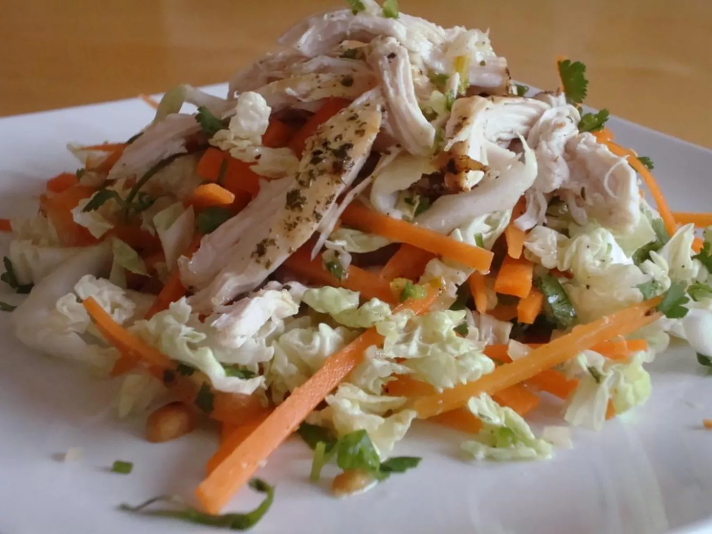

Vietnamese Chicken Salad

Description
Discover the vibrant flavors of Southeast Asia with our refreshing Vietnamese Chicken Salad. This light yet satisfying dish combines tender shredded chicken with crunchy vegetables, fresh herbs, and a zesty lime dressing. Topped with roasted peanuts and fried shallots, each bite offers a delightful mix of textures and tastes. Perfect for a healthy lunch, a flavorful side dish, or a quick weeknight dinner, this salad is a true celebration of Vietnamese cuisine. Follow our easy recipe to bring a taste of Vietnam to your table.
Ingredients
For the Salad
- 2 cups cooked chicken breast, shredded
- 2 cups green cabbage, thinly sliced
- 1 cup red cabbage, thinly sliced
- 1 cup carrots, julienned or shredded
- 1 cup cucumber, julienned
- 1 cup fresh herbs (mint, cilantro, and Thai basil), roughly chopped
- 1/2 cup red bell pepper, thinly sliced
- 1/4 cup red onion, thinly sliced
- 1/4 cup roasted peanuts, roughly chopped
- /4 cup fried shallots (optional)
For the Dressing
- 1/4 cup fresh lime juice
- 3 tablespoons fish sauce
- 2 tablespoons rice vinegar
- 2 tablespoons sugar
- 1 garlic clove, minced
- 1 red chili, thinly sliced (optional for heat)
- 2 tablespoons water
Steps
Preparing the Dressing
- In a small bowl, whisk together the lime juice, fish sauce, rice vinegar, sugar, minced garlic, red chili (if using), and water until the sugar is dissolved. Set aside.
Prepare the Salad
- In a large bowl, combine the shredded chicken, green cabbage, red cabbage, carrots, cucumber, fresh herbs, red bell pepper, and red onion.
- Toss the ingredients together until well mixed.
Assemble the Salad
- Pour the dressing over the salad and toss again to ensure everything is evenly coated.
- Let the salad sit for about 10-15 minutes to allow the flavors to meld.
Serve
- Transfer the salad to a serving platter or individual bowls.
- Sprinkle the roasted peanuts and fried shallots (if using) on top just before serving for added crunch and flavor.